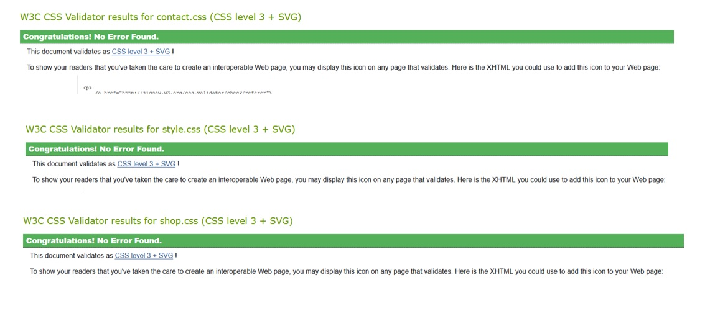
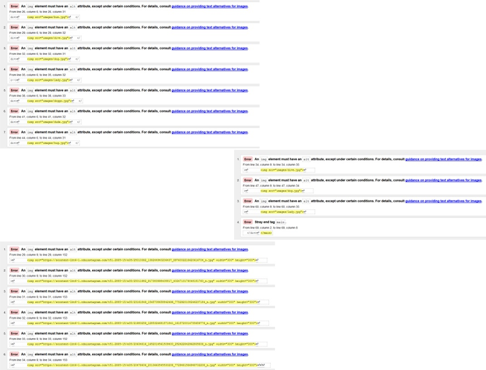
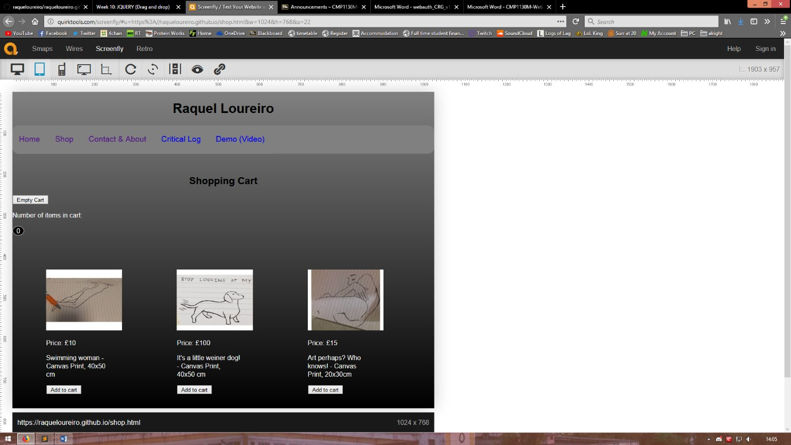
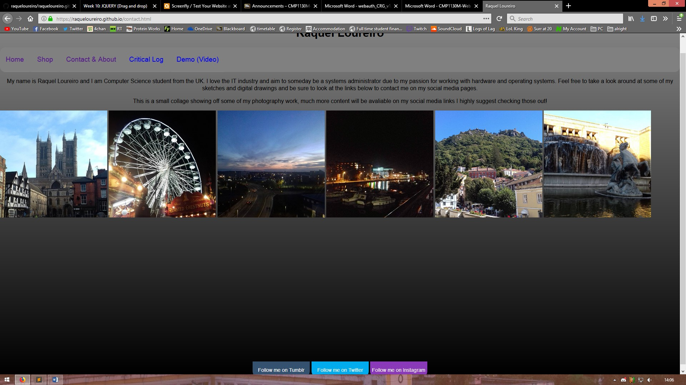
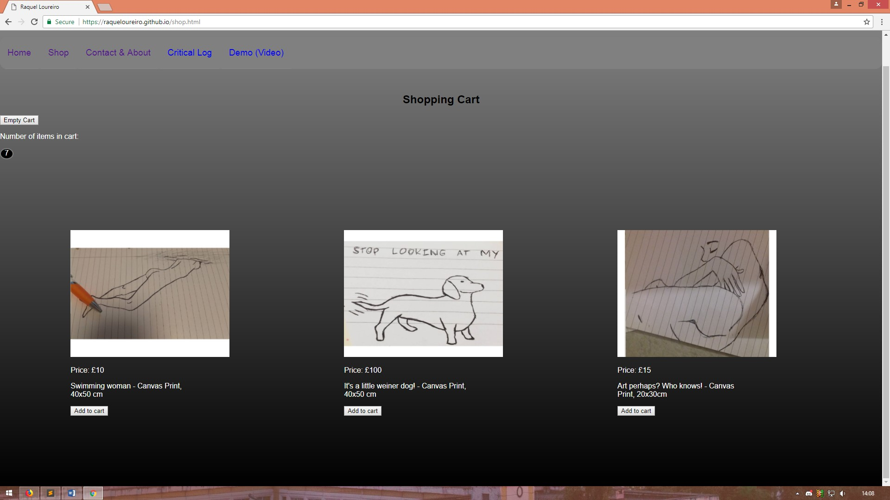
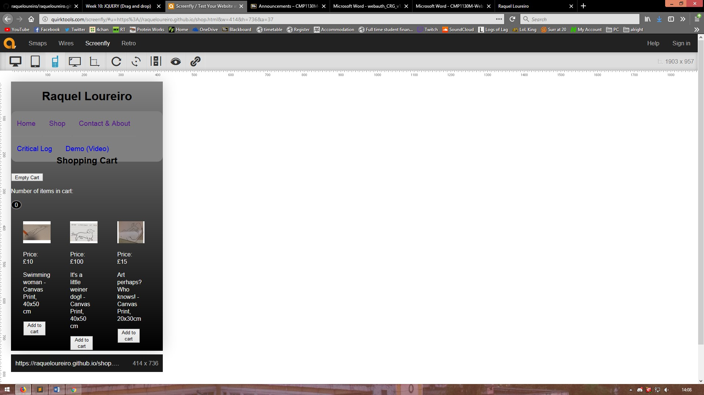
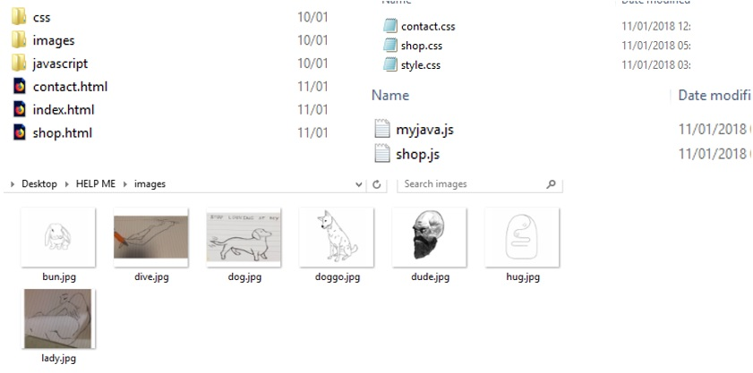

Web Authoring - CMP1130M-1718 Assessment Critical Log/ Report Website: https://raqueloureiro.github.io/ Intro During this assessment, I was tasked to create an interactive website for a chosen ‘band’ or ‘brand’, I chose to make a personal portfolio for myself as well as a shop, embracing this as my brand. My Report/Log will cover how best practice was used when handling this task, evaluating my strengths and weaknesses, analysing current web standards as well as my websites interoperability along with how I took on challenges that presented themselves and the techniques I used in doing so. Challenges I faced many challenges when developing my website, I struggled to stick to my main wireframe as I simply hadn’t comprehended how time consuming it would be to make a website to the standards I dreamed so I did have to change certain layouts and levels of interactivity however luckily my Moodboard and colour scheme stayed the same and was good inspiration for my websites dark theme. Developing the website to be responsive to different screen sizes and browsers was also a time-consuming encounter, along with setting up local storage for use as after doing research I learned that Internet Explorer (Edge) does not support the use of local/sessionStorage so if users were to want to access the shopping cart customizer, my website would have to be run off a server, running from a local file isn’t supported. Web Standards Web standards are monitored and implemented by the W3C, the aim of these outlined web standards is to provide developers and programmers with recommendations on how to keep their websites viable and responsive for all users no matter their browser or operating system. The most recognised standard set out by the W3C is the use of HTML (HyperText Markup Language) to define the structure and insert content on the web page and CSS (Cascading Style Sheets) which allows developers to customise the appearance of the website. CSS is a great tool as having a style sheet makes download times for websites shorter along with making code more compact whilst HTML is compatible with almost all browsers allowing for an extensive reach for audiences and a pleasurable user experience. One mustn’t forget however that HTML is a static language so it does require the aid of additional languages such as JavaScript to make it a lot more interactive, unfortunately this does also mean developers spend more time working on websites along with having work that is a lot more prone to errors due to the need for the collaboration of multiple languages. My website did manage to meet the set-out web standards when it came to my CSS as outlined here
However, my HTML did fail to meet set out web standards, I was returned with the error of not having provided text alternatives for my inserted images.
Unfortunately, all my errors were linked to my lack of alternate text for my images, though this is cam easily rectified it is important to analyse this to make sure web standards are always met. This simple mistake brings to light the importance of user accessibility as those with disabilities will also need access to my content and the W3C recommends the use of alternative text for images for users who cannot view the imported image. If I had adhered to this standard not only would I have an ideal site with no present errors but I would have also been able to reach a wider audience. The UK Equality Act 2010 I researched also gives me more reasoning to correct these errors as certain complications could arise if users were to feel discriminated against when using my website. I also made sure to follow web standards when it came to the use of my LocalStorage and implementation of JavaScript. I made sure to check for the DOM to be loaded before I called for any JavaScript or JQuery functions to be called (This is commented and outlined in my code). Interoperability Interoperability is how a website can be viewed and accessed on different web browsers, smartphones, tablets and operating systems. This is key as my assignment requires my website to be dynamic and accessible on multiple browsers and screen sizes. To try and keep my site as interoperable as possible I made sure the code I was developing was supported by most major browsers. My layout was straight forward and simplistic and I tried to keep it as unchanging as possible when switching between screen sizes so a user familiar with the site wouldn’t need to search for features, making it a more streamlined experience. Though my website wasn’t totally interoperable when it came to switching to mobile devices, the screen size would often make the websites content squished together but this was my own doing as interoperability for mobile use was something that I had forgotten about, I had spent so much time checking the website on my tablet and Firefox and Chrome that when it came to mobile the website simply wasn’t very presentable. Had I the necessary knowledge and remembered the importance of mobile interoperability I wouldn’t have faced this challenge.
Website on iPad
Firefox
Chrome
iPhone 6/7 plus
Though the website does not look its best when taken out of a desktop browser, I followed web standards when it came to working with JavaScript and JQuery and I am pleased to say that my LocalStorage customizer/shopping cart and slideshow works on all tried methods of accessing the site, allowing for an interactive experience for users even if it doesn’t look too pretty.
File Organisation When putting together my site I made sure my files and folders had simple file paths and I could access any part of the code when needed whether it be a CSS, HTML or JS file I had a clear layout for my work.
Bibliography Simple Auto-Playing Slideshow - https://css-tricks.com/snippets/jquery/simple-auto-playing-slideshow/ JQuery Tutorial - https://www.w3schools.com/JQuery/ MarkUp Validation Service W3C - https://validator.w3.org/